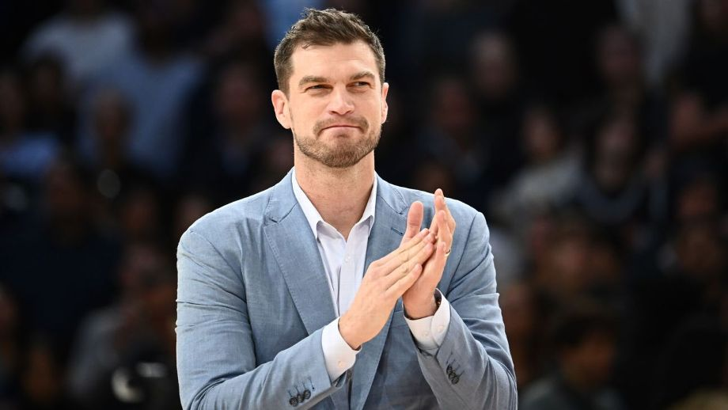

"Tiago Splitter e ex-Flamengo são anunciados na comissão técnica do Portland Trail Blazers

Tiago Splitter está de volta à NBA. O brasileiro aceitou o convite do Portland Trail Blazers e irá integrar a comissão técnica de Chauncey Billups a partir da temporada 2025-26. Splitter foi assistente técnico do Brooklyn Nets entre 2020 e 2023, do Houston Rockets em 2023-24 e treinador principal do Paris Basketball na temporada passada. Também integra a comissão técnica de Alexsandar Petrovic na Seleção Brasileira Masculina. Na Europa, Splitter está prestes a comandar a equipe na final da LNB PRO A, principal torneio nacional francês, contra o Mônaco. A série terá início no próximo domingo (15). Também foi campeão da Copa da França, além de conseguir uma campanha surpreendente com o Paris na Euroliga. A equipe chegou a liderar a competição no primeiro turno, com o brasileiro recebendo o prêmio de Treinador do Mês em novembro. O rendimento caiu na reta final, mas ainda conseguiu classificar a equipe para o play-in, quando passou pelo Real Madrid. Nos playoffs, porém, caiu para o Fenerbahce, da Turquia, que conseguiu o título europeu. Agora, na comissão dos Trail Blazers, Splitter trabalhará em uma das franquias com maior potencial de crescimento para as próximas temporadas. Portland subiu de 25% para 43% de aproveitamento nas duas campanhas mais recentes. Os principais jogadores têm 26 anos ou menos: Anfernee Simons (25), Shaedon Sharpe (21), Scoot Henderson (20), Deni Avdija (24) e Toumani Camara (24) têm demonstrado bons atributos nos dois lados da quadra e espaço para crescerem ainda mais num futuro próximo. Além deles, Donovan Clingan (20), Jabari Walker (22), Matisse Thybulle (27), Deandre Ayton (26) e Jerami Grant (30) são peças de qualidade e que podem contribuir para campanhas cada vez mais eficientes ou se tornarem bons ativos para trocas. No próximo Draft a franquia terá a 11ª escolha. Splitter não será o único brasileiro assistente técnico na NBA: Leandrinho Barbosa, companheiro de Tiago na seleção, vai para sua quarta temporada como assistente no Sacramento Kings.
Ex-Flamengo também foi adicionado ao time